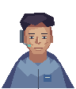
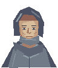

Ines Okafor
a warm, reassuring toolbox chime
Original wordless sounds, about half a second each. Lock in auditions a simulated confirmation; the real phone waits for its server-confirmed choice. The game UI remains in open #316.
Choose a character to hear their signature.
a warm, reassuring toolbox chime

a round little two-part rigging plonk

a light upward pilot whistle
a gentle, rounded medical scanner reply

a playful three-note terminal greeting

a sturdy little cargo-latch boop

a curious quick scout chirrup

a soft, sparkling radio hello